4→100
markets
Off-ramp coverage expanded at Zeam; on-ramp and funding enabled across ~60.
Stellenbosch, South Africa · Open to select mandates
Product, Implementation & Commercial Growth Leader
Twelve-plus years across fintech, payments, SaaS, HR technology, e-commerce and software development. I combine product discovery and enterprise implementation with international market entry, commercial growth and hands-on operational leadership — building products, opening markets, onboarding enterprise clients, designing commercial models and leading multidisciplinary teams.
Outcomes owned end-to-end, not observed from the sidelines.
Off-ramp coverage expanded at Zeam; on-ramp and funding enabled across ~60.
Commercial growth at Happy Pay, lifting monthly platform revenue to ~R750k.
Tripled in a single year as General Manager at Methys Digital.
Co-founded and scaled Basilei with no external funding.
Direct operating presence across seven countries, plus payout coverage built across roughly 100.

Operator roles across startups, scale-ups and enterprise delivery.
Zeam · stablecoin-powered payments and cross-border remittance
Sutera · operator-led advisory providing fractional product, commercial and operational leadership
Delivered through Sutera on a fractional or advisory basis; several mandates ran concurrently rather than consecutively.
Methys Digital · software development and digital delivery
Warp Development · enterprise e-commerce and software delivery
SmartFunder · payroll-based school-fee employee benefit
Kibo Connect · fibre connectivity and IT infrastructure
Shoprite Checkers · graduate management programme
Entrepreneurial
Basilei · confectionery manufacturing and retail
Quantic School of Business and Technology
University of South Africa
University of Cambridge
University of Maryland
Boston University
Available for leadership roles and select fractional mandates across product, commercial and operations — fintech and payments especially.
Stellenbosch, South Africa · South African national